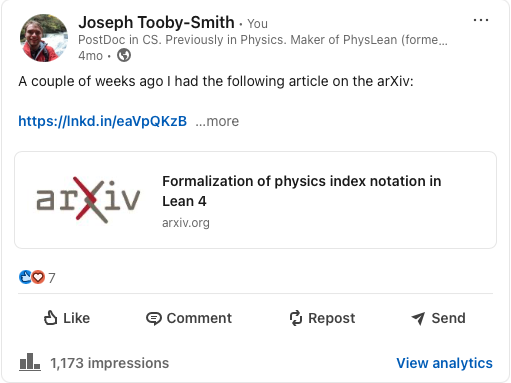
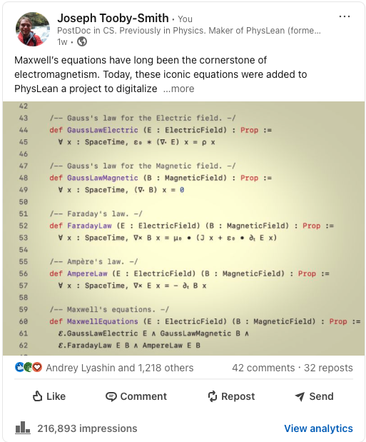
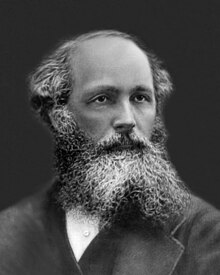

Physics and Lean
10th April 2025
Joseph Tooby-Smith, Reykjavík University
Slides at: https://josephtoobysmith.com/Slides/Bath2025.html
Information
"The quality of information is decreasing with time."
- Yuval Noah Harari in Nexus (paraphrased).
"This is also true in academia."
- Me in this talk.
Proof:
Papers published in high energy physics:
In 2013 (41,584)
In 2024 (65,651)
Question:
How do we flatten the curve?
That is, how do we ensure information quality does not decrease in time.Mathematicians Answer:
Use proof assistants
Lean, Rocq, Agada, etc.What about other subjects?
History?
Physics?
PhysLean
The Vision
Fundamental theorems and definitions covering physics.
Computable definitions.
Interface with programs and simulations.
Interface with experimental data
Extensive physics based documentation (AI?).
Be organized by physics principals.
Look like physics.
example : {F x | μ ν = - (F x | ν μ)}ᵀ := by sorry
Be searchable.
Be useful to the uninitiated.
Have a large community behind it.
Pietro Monticone
KUO-TSAN HSU
Matteo Cipollina
David Feng
ZhaiKai Pong
Krishna Padmasola
Oliver Bøving
Ammar Husain
Jeremy Lindsay
Sods law:


What's to come
Maxwell's Equations
Twin's Paradox
Quantum Harmonic Oscillator
Feynman Diagrams
Maxwell's equations
James Clerk Maxwell (1831-1879):

The electric and magnetic fields:
/-- The electric field is a map from `d`+1 dimensional spacetime to the vector space
`ℝ^d`. -/
abbrev ElectricField (d : ℕ := 3) := SpaceTime d → EuclideanSpace ℝ (Fin d)
/-- The magnetic field is a map from `d+1` dimensional spacetime to the vector space
`ℝ^d`. -/
abbrev MagneticField (d : ℕ := 3) := SpaceTime d → EuclideanSpace ℝ (Fin d)
The equtions:
variable (𝓔 : EMSystem) (ρ : ChargeDensity) (J : CurrentDensity)
local notation "ε₀" => 𝓔.ε₀
local notation "μ₀" => 𝓔.μ
/-- Gauss's law for the Electric field. -/
def GaussLawElectric (E : ElectricField) : Prop :=
∀ x : SpaceTime, ε₀ * (∇⬝ E) x = ρ x
/-- Gauss's law for the Magnetic field. -/
def GaussLawMagnetic (B : MagneticField) : Prop :=
∀ x : SpaceTime, (∇⬝ B) x = 0
/-- Ampère's law. -/
def AmpereLaw (E : ElectricField) (B : MagneticField) : Prop :=
∀ x : SpaceTime, ∇× B x = μ₀ • (J x + ε₀ • ∂ₜ E x)
/-- Faraday's law. -/
def FaradayLaw (E : ElectricField) (B : MagneticField) : Prop :=
∀ x : SpaceTime, ∇× E x = - ∂ₜ B x
/-- Maxwell's equations. -/
def MaxwellEquations (E : ElectricField) (B : MagneticField) : Prop :=
GaussLawElectric 𝓔 ρ E ∧ GaussLawMagnetic B ∧
FaradayLaw E B ∧ AmpereLaw 𝓔 J E B
Twin's paradox
Albert Einstein (1879-1955):
The data:
/-- The twin paradox assuming instantaneous acceleration. -/
structure InstantaneousTwinParadox where
/-- The starting point of both twins. -/
startPoint : SpaceTime 3
/-- The end point of both twins. -/
endPoint : SpaceTime 3
/-- The point twin B travels to between the start point and the end point. -/
twinBMid : SpaceTime 3
endPoint_causallyFollows_startPoint : causallyFollows startPoint endPoint
twinBMid_causallyFollows_startPoint : causallyFollows startPoint twinBMid
endPoint_causallyFollows_twinBMid : causallyFollows twinBMid endPoint
Some properties:
variable (T : InstantaneousTwinParadox)
/-- The proper time experienced by twin A travelling at constant speed
from `T.startPoint` to `T.endPoint`. -/
def properTimeTwinA : ℝ := SpaceTime.properTime T.startPoint T.endPoint
/-- The proper time experienced by twin B travelling at constant speed
from `T.startPoint` to `T.twinBMid`, and then from `T.twinBMid`
to `T.endPoint`. -/
def properTimeTwinB : ℝ := SpaceTime.properTime T.startPoint T.twinBMid +
SpaceTime.properTime T.twinBMid T.endPoint
/-- The proper time of twin A minus the proper time of twin B. -/
def ageGap : ℝ := T.properTimeTwinA - T.properTimeTwinB
An example:
def example1 : InstantaneousTwinParadox where
startPoint := 0
endPoint := toCoord.symm (fun
| Sum.inl 0 => 15
| Sum.inr i => 0)
twinBMid := toCoord.symm (fun
| Sum.inl 0 => 7.5
| Sum.inr 0 => 6
| Sum.inr i => 0)
endPoint_causallyFollows_startPoint := by...
twinBMid_causallyFollows_startPoint := by...
endPoint_causallyFollows_twinBMid := by...
norm_num
The paradox:
@[simp]
lemma example1_properTimeTwinA : example1.properTimeTwinA = 15 := by
simp [properTimeTwinA, example1, properTime, innerProduct_toCoord]
@[simp]
lemma example1_properTimeTwinB : example1.properTimeTwinB = 9 := by
simp only [properTimeTwinB, properTime, example1, sub_zero, innerProduct_toCoord, Fin.isValue,
LinearEquiv.apply_symm_apply, Fin.sum_univ_three, mul_zero, add_zero, map_sub, Pi.sub_apply,
zero_sub, mul_neg, neg_mul, neg_neg]
rw [show √(7.5 * 7.5 - 6 * 6) = √20.25 by norm_num]
rw [show √((15 - 7.5) * (15 - 7.5) - 6 * 6) = √20.25 by norm_num]
rw [show √20.25 = 4.5 from sqrt_eq_cases.mpr (by norm_num)]
norm_num
lemma example1_ageGap : example1.ageGap = 6 := by
simp [ageGap]
norm_num
norm_num
Quantum harmonic oscillator
Erwin Schrödinger (1887-1961):

The data:
structure HarmonicOscillator where
/-- The mass of the particle. -/
m : ℝ
/-- Reduced Planck's constant. -/
ℏ : ℝ
/-- The angular frequency of the harmonic oscillator. -/
ω : ℝ
hℏ : 0 < ℏ hω : 0 < ω hm : 0 < m
The Schrodinger Operator:
noncomputable def schrodingerOperator (ψ : ℝ → ℂ) : ℝ → ℂ :=
fun x => - Q.ℏ ^ 2 / (2 * Q.m) * (deriv (deriv ψ) x) + 1/2 * Q.m * Q.ω^2 * x^2 * ψ x
The Eigenfunctions and Eigenvalues:
noncomputable def eigenfunction (n : ℕ) : ℝ → ℂ := fun x =>
1/√(2 ^ n * n !) * (1/ √(√Real.pi * Q.ξ)) * physHermite n (x / Q.ξ) *
Real.exp (- x^2 / (2 * Q.ξ^2))
noncomputable def eigenValue (n : ℕ) : ℝ := (n + 1/2) * Q.ℏ * Q.ω
The Time indepednent Schrodinger equation:
lemma schrodingerOperator_eigenfunction (n : ℕ) (x : ℝ) :
Q.schrodingerOperator (Q.eigenfunction n) x = Q.eigenValue n * Q.eigenfunction n x := by
simp only [schrodingerOperator_eq_ξ, one_div]
rw [Q.deriv_deriv_eigenfunction]
have hm' := Complex.ofReal_ne_zero.mpr (Ne.symm (_root_.ne_of_lt Q.hm))
have hℏ' := Complex.ofReal_ne_zero.mpr (Ne.symm (_root_.ne_of_lt Q.hℏ))
rw [eigenValue]
simp only [← Complex.ofReal_pow, ξ_sq]
field_simp
ring
Feynman diagrams
Richard Feynman (1918-1969):
"Many things in physics reduce to simple problems in computer science and mathematics."
- Also me in this talk.
Wick contractions:
def WickContraction (n : ℕ) : Type :=
{f : Finset ((Finset (Fin n))) // (∀ a ∈ f, a.card = 2) ∧
(∀ a ∈ f, ∀ b ∈ f, a = b ∨ Disjoint a b)}
Examples of Wick contractions:
lemma mem_three (c : WickContraction 3) : c.1 ∈ ({∅, {{0, 1}}, {{0, 2}}, {{1, 2}}} :
Finset (Finset (Finset (Fin 3)))) := by...
lemma mem_four (c : WickContraction 4) : c.1 ∈ ({∅,
{{0, 1}}, {{0, 2}}, {{0, 3}}, {{1, 2}}, {{1, 3}}, {{2,3}},
{{0, 1}, {2, 3}}, {{0, 2}, {1, 3}}, {{0, 3}, {1, 2}}} :
Finset (Finset (Finset (Fin 4)))) := by ...
The sign of a Wick contraction:
def sign (φs : List 𝓕.FieldOp) (φsΛ : WickContraction φs.length) : ℂ :=
∏ (a : φsΛ.1), 𝓢(𝓕 |>ₛ φs[φsΛ.sndFieldOfContract a],
𝓕 |>ₛ ⟨φs.get, φsΛ.signFinset (φsΛ.fstFieldOfContract a) (φsΛ.sndFieldOfContract a)⟩)
Conclusion
The Problem:
Quality of information is decreasing with time.
Solution:
Use proof assistants for physics
Method:
PhysLean - A mathematical library for physics